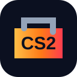

GitHub Pages ready · v5
CS2 Case Lab: кейсы, апгрейд, контракты и бонусы
Многостраничный фан-симулятор: реальные названия кейсов и скинов через открытый каталог, live-лента, инвентарь, реклама своих проектов на 10 секунд и локальная валюта LabCoins.

AK-47 | Redline
★ Karambit
Загружаю каталог...